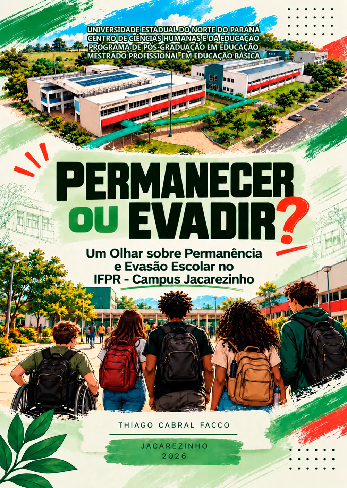

E-book Interativo sobre permanência e evasão escolar, elaborado a partir dos resultados da pesquisa e direcionado especialmente a gestores e docentes, reunindo fundamentos teóricos, dados institucionais, ações desenvolvidas e possibilidades de enfrentamento da evasão.
Produto educacional
PERMANECER OU EVADIR?
UM OLHAR SOBRE PERMANÊNCIA E EVASÃO ESCOLAR NO IFPR - CAMPUS JACAREZINHO
Autoria
Thiago Cabral Facco
Instituição
Universidade Estadual do Norte do Paraná Centro de Ciências Humanas e da Educação Programa de Pós-Graduação em Educação Mestrado Profissional em Educação Básica
Ano
2026

Para quem é
O Produto Educacional destina-se a gestores, docentes, pesquisadores e demais interessados na temática da permanência e da evasão escolar no IFPR - Campus Jacarezinho.
O que você encontra
Fundamentos sobre permanência e evasão escolar, dados e indicadores do IFPR - Campus Jacarezinho, Painel Analítico Interativo, resultados da pesquisa e ações e estratégias voltadas à promoção da permanência e à prevenção da evasão.
Como navegar
Escolha um capítulo no sumário ou avance pelos botões no fim de cada página.
2
Capítulo 2 de 8
SOBRE O PRODUTO EDUCACIONAL E O AUTOR
Esta seção apresenta a trajetória do autor na educação pública e explica como seu encontro com o Instituto Federal do Paraná despertou as inquietações que motivaram a pesquisa e este material.
ESCOLA PÚBLICA
DOCÊNCIA
INSTITUTO FEDERAL2014
A escola pública como origem
Toda a minha formação básica aconteceu na escola pública. Cresci em um bairro periférico de Curitiba e tive professores, gestores e, principalmente, uma família que criou condições para que a educação ocupasse um lugar importante em minha vida.
Sou resultado da escola e da educação pública.
Da formação à docência
Anos depois, já formado em Matemática e atuando como professor, passei a perceber alguns dos desafios vivenciados cotidianamente pelas escolas, pelos profissionais da educação e, especialmente, pelos estudantes.
2014— ENCONTRO COM O IFPR
Em 2014, minha trajetória encontrou o Instituto Federal do Paraná. O primeiro contato foi marcado pelo encantamento. Professores qualificados, projetos, aulas experimentais, tecnologias e uma estrutura que me fizeram pensar em como teria sido minha própria experiência escolar se tivesse encontrado condições semelhantes durante a infância e a juventude.
Mas uma questão começou a me inquietar.
A pergunta que motivou a pesquisa
À medida que conhecia melhor a instituição, seus profissionais, estudantes e dados, uma realidade tornou-se cada vez mais presente: a evasão escolar.
Como uma instituição com uma proposta educacional que tanto me encantava e que ampliava oportunidades de acesso a uma educação pública de qualidade poderia, ao mesmo tempo, enfrentar dificuldades para garantir a permanência de seus estudantes?
Da inquietação à pesquisa
Foi dessa aparente contradição que surgiram as inquietações que motivaram a pesquisa desenvolvida no Programa de Pós-Graduação em Educação — Mestrado Profissional em Educação Básica da Universidade Estadual do Norte do Paraná. Desse processo de investigação nasceu o Produto Educacional aqui apresentado, intitulado:
PERMANECER OU EVADIR: UM OLHAR SOBRE A EVASÃO ESCOLAR E PERMANÊNCIA NO IFPR — CAMPUS JACAREZINHO
Síntese do percurso
ENCANTAMENTO
INQUIETAÇÃO
PESQUISA
3
Capítulo 3 de 8
INTRODUÇÃO
Entre ingressar e concluir
Falar sobre o direito à educação significa olhar para além das possibilidades de ingresso. Significa também perguntar quais condições os estudantes encontram para permanecer, aprender e concluir suas trajetórias escolares.
Entre a entrada em uma instituição e a conclusão de um curso existe um percurso que nem sempre acontece de maneira linear. Expectativas construídas antes do ingresso, experiências de adaptação, relações com colegas e professores, dificuldades acadêmicas, condições pessoais, familiares e socioeconômicas e características da própria instituição podem se encontrar e assumir diferentes significados ao longo dessa trajetória.
É nesse percurso que permanência e evasão deixam de representar apenas números registrados nos sistemas acadêmicos e passam a revelar experiências vivenciadas por estudantes.
O que acontece entre o ingresso de um estudante e a conclusão ou interrupção de sua trajetória?
Essa pergunta ganha especial importância na Educação Profissional e Tecnológica. A expansão da Rede Federal ampliou e interiorizou oportunidades de acesso à educação pública federal. Entretanto, ampliar as possibilidades de ingresso não significa, necessariamente, assegurar que todos os estudantes consigam permanecer até a conclusão de seus cursos.
QUANDO OS NÚMEROS REVELAM UM DESAFIO
No IFPR Campus Jacarezinho, contexto em que a pesquisa foi desenvolvida, os dados tornam essa discussão particularmente significativa. Entre as trajetórias já encerradas dos estudantes dos cursos de Ensino Médio Integrado analisadas, foram identificados praticamente tantos registros de evasão quanto de conclusão.
1.415 trajetórias encerradas
717concluíram
698evadiram
50,7%49,3%
Conclusão: 717 trajetórias, aproximadamente 50,7%.
Evasão: 698 trajetórias, aproximadamente 49,3%.
49,3% das 1.415 trajetórias encerradas analisadas correspondem a situações de evasão.
Dados referentes aos estudantes dos cursos de Ensino Médio Integrado do IFPR Campus Jacarezinho.
Os números ajudam a dimensionar o problema, mas não explicam, sozinhos, por que essas trajetórias foram interrompidas.
Dois olhares sobre as trajetórias
Por isso, a pesquisa voltou seu olhar para as experiências dos sujeitos que vivenciaram ou acompanharam esses percursos. Foram aproximadas duas perspectivas: a de estudantes que ingressaram no Ensino Médio Integrado e não concluíram seus cursos e a de docentes que, além da atuação em sala de aula, possuem ou possuíram experiências relacionadas à gestão da instituição.
ESTUDANTES EVADIDOS
Como percebem sua trajetória e os fatores relacionados à permanência e à evasão?
DOCENTES
Como percebem esses mesmos fatores a partir de suas experiências na docência e na gestão?
Onde esses olhares se aproximam? Onde divergem? E o que eles podem nos ensinar sobre as trajetórias estudantis?
DA PESQUISA À REFLEXÃO E À AÇÃO
Este material nasce das inquietações, dos dados e das experiências encontradas ao longo da pesquisa. Mais do que apresentar resultados, buscamos transformar os conhecimentos produzidos durante a investigação em um recurso que possa contribuir para compreender a permanência e a evasão e estimular reflexões sobre possibilidades de atuação no contexto educacional.
Ao longo deste material, percorreremos alguns dos fundamentos que ajudam a compreender a Educação Profissional e Tecnológica, conheceremos mais de perto o IFPR Campus Jacarezinho e discutiremos fatores relacionados às trajetórias de permanência e evasão identificados na pesquisa.
NOSSO PERCURSO
1Educação Profissional
2Rede Federal e IFPR Campus Jacarezinho
3Permanência e Evasão
4Dados do Campus
5Olhares de Estudantes e Docentes
6Ações e Caminhos Possíveis
PAINEL ANALÍTICO
O material também incorpora um PAINEL ANALÍTICO, construído para permitir a exploração de dados históricos do Campus Jacarezinho relacionados ao ingresso, à permanência, à conclusão e à evasão. Mais do que oferecer respostas prontas, o painel possibilita observar os dados por diferentes perspectivas e formular novas perguntas sobre as trajetórias dos estudantes.
Ao lado dos dados e dos resultados da pesquisa, serão apresentadas ações já desenvolvidas institucionalmente e possibilidades que podem contribuir para a promoção da permanência e para a prevenção da evasão. Essas possibilidades não constituem receitas ou soluções universais. Cada instituição possui características, sujeitos e contextos próprios que precisam ser considerados.
Não existe uma solução única para a evasão escolar.
Promover a permanência exige observar continuamente as trajetórias dos estudantes, compreender diferentes realidades e construir respostas capazes de acompanhar as transformações da instituição e de seus sujeitos.
4
Capítulo 4 de 8
Seção 4
Texto provisório. Este modelo apresenta quatro ideias lado a lado, cada uma com o seu ícone.
Tópico 1
Uma ou duas frases sobre este tópico. O ícone pode ser trocado por outro que combine com o assunto.
Tópico 2
Uma ou duas frases sobre este tópico, com o mesmo tamanho dos demais para manter o equilíbrio.
Tópico 3
Uma ou duas frases sobre este tópico. Serve bem para objetivos, princípios ou eixos do trabalho.
Tópico 4
Uma ou duas frases sobre este tópico, fechando o conjunto.
Abaixo dos tópicos, o texto corrido volta a conduzir a leitura e explica como as quatro ideias se relacionam.
5
Capítulo 5 de 8
Seção 5
Texto provisório. Este modelo dá destaque a números e traz um bloco de aviso.
Primeiro dado em destaque
00
Segundo dado em destaque
00
Terceiro dado em destaque
00
Os números acima são marcadores de posição. Eles dão lugar aos dados do seu trabalho.
Subtítulo da seção
O texto explica os números: de onde vêm, o que mostram e por que importam para quem vai usar o produto.
Um segundo parágrafo aprofunda a leitura dos dados.
6
Capítulo 6 de 8
Seção 6
Texto provisório. Este modelo mostra uma galeria de imagens com legendas.
Imagem 3proporção 4:5
Legenda provisória da primeira imagem.
Imagem 4proporção 4:5
Legenda provisória da segunda imagem.
Imagem 5proporção 4:5
Legenda provisória da terceira imagem.
O texto que acompanha a galeria comenta as imagens: registros de atividades, telas do material, fotos ou ilustrações.
7
Capítulo 7 de 8
Seção 7
Texto provisório. Este modelo organiza o conteúdo em etapas, na ordem em que acontecem.